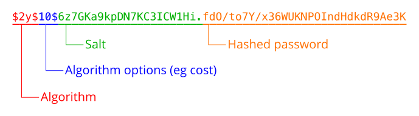

密码散列安全
本部分解释使用散列函数对密码进行安全处理背后的原因， 以及如何有效的进行密码散列处理。
- 为什么需要把应用程序中用户的密码进行散列化？
-
当设计一个需要接受用户密码的应用时， 对密码进行散列是最基本的，也是必需的安全考虑。 如果不对密码进行散列处理，那么一旦应用的数据库受到攻击， 那么用户的密码将被窃取。 同时，窃取者也可以使用用户账号和密码去尝试其他的应用， 如果用户没有为每个应用单独设置密码，那么将面临风险。
通过对密码进行散列处理，然后再保存到数据库中， 这样就使得攻击者无法直接获取原始密码， 同时还可以保证你的应用可以对原始密码进行相同的散列处理， 然后比对散列结果。
需要着重提醒的是，密码散列只能保护密码 不会被从数据库中直接窃取， 但是无法保证注入到应用中的 恶意代码拦截到原始密码。
- 为何诸如 md5() 和 sha1() 这样的常见散列函数不适合用在密码保护场景？
-
MD5，SHA1 以及 SHA256 这样的散列算法是面向快速、高效 进行散列处理而设计的。随着技术进步和计算机硬件的提升， 破解者可以使用“暴力”方式来寻找散列码 所对应的原始数据。
因为现代化计算机可以快速的“反转”上述散列算法的散列值， 所以很多安全专家都强烈建议 不要在密码散列中使用这些散列算法。
- 如果不建议使用常用散列函数保护密码， 那么我应该如何对密码进行散列处理？
-
当进行密码散列处理的时候，有两个必须考虑的因素： 计算量以及“盐”。 散列算法的计算量越大， 暴力破解所需的时间就越长。
PHP 5.5 提供了 一个原生密码散列 API， 它提供一种安全的方式来完成密码 散列和 验证。 PHP 5.3.7 及后续版本中都提供了一个 » 纯 PHP 的兼容库。
PHP 5.3 及后续版本中，还可以使用 crypt() 函数， 它支持多种散列算法。 针对每种受支持的散列算法，PHP 都提供了对应的原生实现， 所以在使用此函数的时候， 你需要保证所选的散列算法是你的系统所能够支持的。
当对密码进行散列处理的时候，建议采用 Blowfish 算法， 这是密码散列 API 的默认算法。 相比 MD5 或者 SHA1，这个算法提供了更高的计算量， 同时还有具有良好的伸缩性。
如果使用 crypt() 函数来进行密码验证， 那么你需要选择一种耗时恒定的字符串比较算法来避免时序攻击。 （译注：就是说，字符串比较所消耗的时间恒定， 不随输入数据的多少变化而变化） PHP 中的 == 和 === 操作符 和 strcmp() 函数都不是耗时恒定的字符串比较， 但是 password_verify() 可以帮你完成这项工作。 我们鼓励你尽可能的使用 原生密码散列 API。
- “盐”是什么？
-
加解密领域中的“盐”是指在进行散列处理的过程中 加入的一些数据，用来避免从已计算的散列值表 （被称作“彩虹表”）中 对比输出数据从而获取明文密码的风险。
简单而言，“盐”就是为了提高散列值被破解的难度 而加入的少量数据。 现在有很多在线服务都能够提供 计算后的散列值以及其对应的原始输入的清单， 并且数据量极其庞大。 通过加“盐”就可以避免直接从清单中查找到对应明文的风险。
如果不提供“盐”，password_hash() 函数会随机生成“盐”。 非常简单，行之有效。
- 我应该如何保存“盐”？
-
当使用 password_hash() 或者 crypt() 函数时， “盐”会被作为生成的散列值的一部分返回。 你可以直接把完整的返回值存储到数据库中， 因为这个返回值中已经包含了足够的信息， 可以直接用在 password_verify() 或 crypt() 函数来进行密码验证。
下图展示了 crypt() 或 password_hash() 函数返回值的结构。 如你所见，算法的信息以及“盐”都已经包含在返回值中， 在后续的密码验证中将会用到这些信息。
